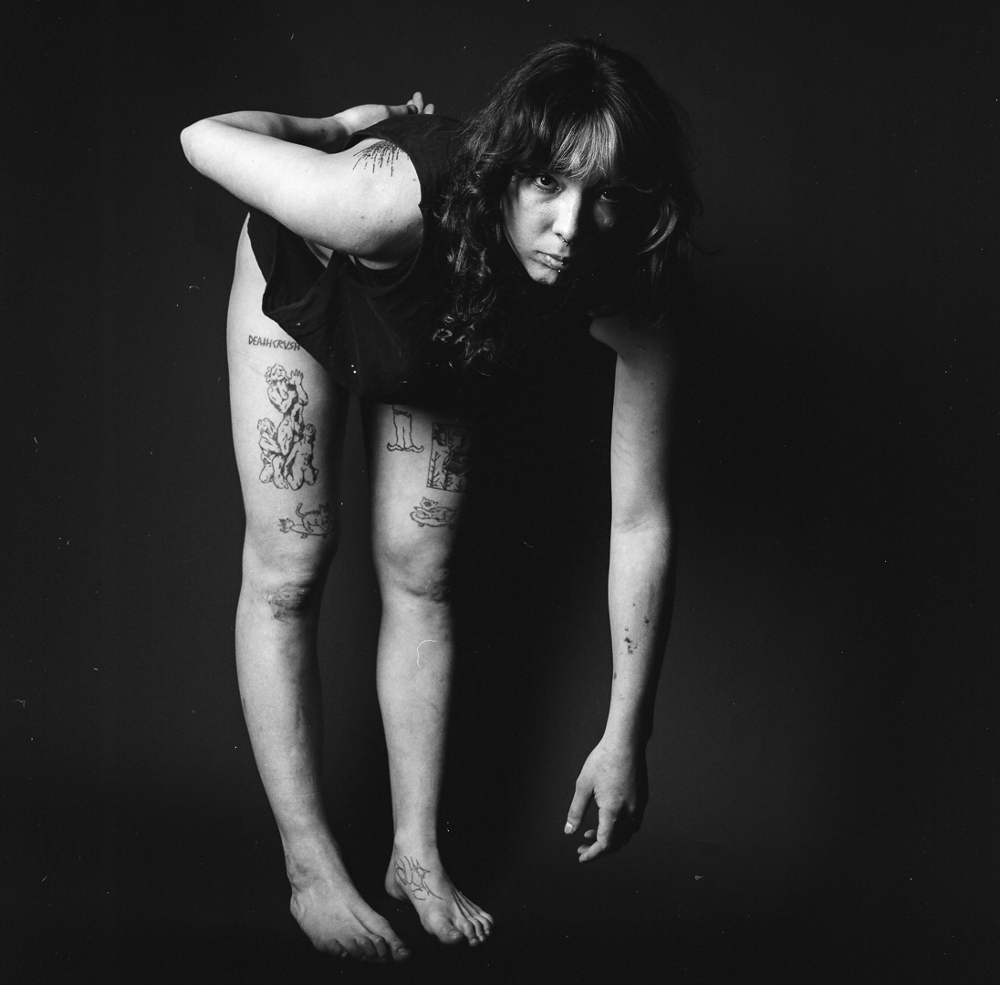

Paintings
View all→

Drawing imagery from my own photography practice and family archive, my oil paintings recontextualize and distort emotionally charged narratives in order to address contemporary instability and examine the emotional intensity of the human condition.
More about me→